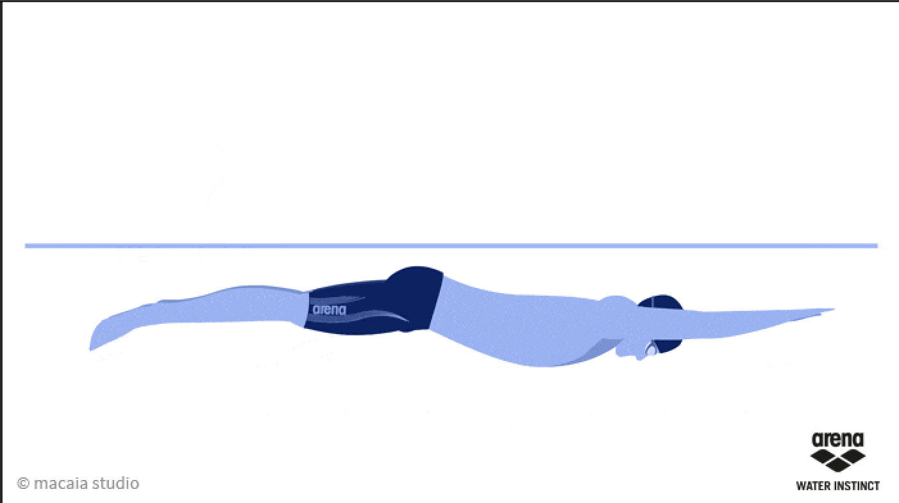
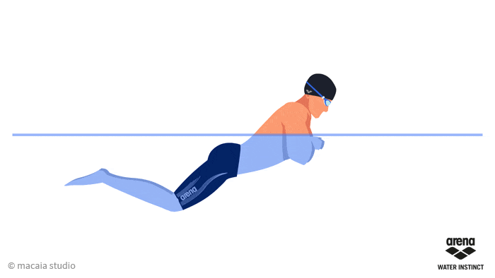
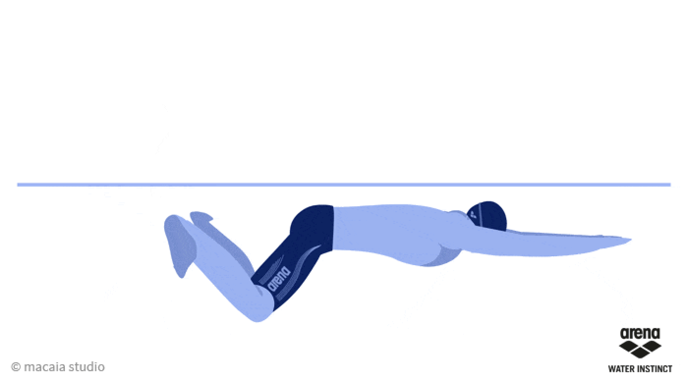

평영이 어려운건 당연합니다. 평영은 다른 영법과 다르게 새로운 방식으로 발을 차기 때문이죠!
그렇기에 평영은 조금 더 분석적으로 접근해야돼요
평영 자세

헤드 포지션: 머리는 물 속에 편안하게 놓여 있어야 하며, 눈은 바닥을 향해야 합니다. 목은 긴장하지 않고 자연스럽게 유지되어야 합니다.

팔 동작: 팔은 몸 앞으로 나란히 뻗은 상태에서 시작하여, 손바닥을 바깥쪽으로 돌리면서 물을 잡아당깁니다. 그 다음, 팔을 몸 쪽으로 당기면서 팔꿈치를 구부립니다. 팔을 다시 앞으로 뻗을 때 손바닥이 아래쪽을 향하게 합니다.

킥: 평영의 독특한 킥 동작은 다리를 뒤로 차는 것이 아니라, 발을 바깥쪽으로 돌리면서 물을 밀어내는 것입니다. 발목과 무릎을 함께 사용하여 최대한의 추진력을 얻습니다. 발이 몸의 중앙선을 넘지 않도록 주의해야 합니다.
호흡: 팔을 당기면서 머리를 물 밖으로 들어 올려 숨을 쉽니다. 머리를 다시 물 속에 넣을 때는 숨을 내쉽니다. 호흡은 리듬을 맞추어 자연스럽게 이루어져야 합니다.